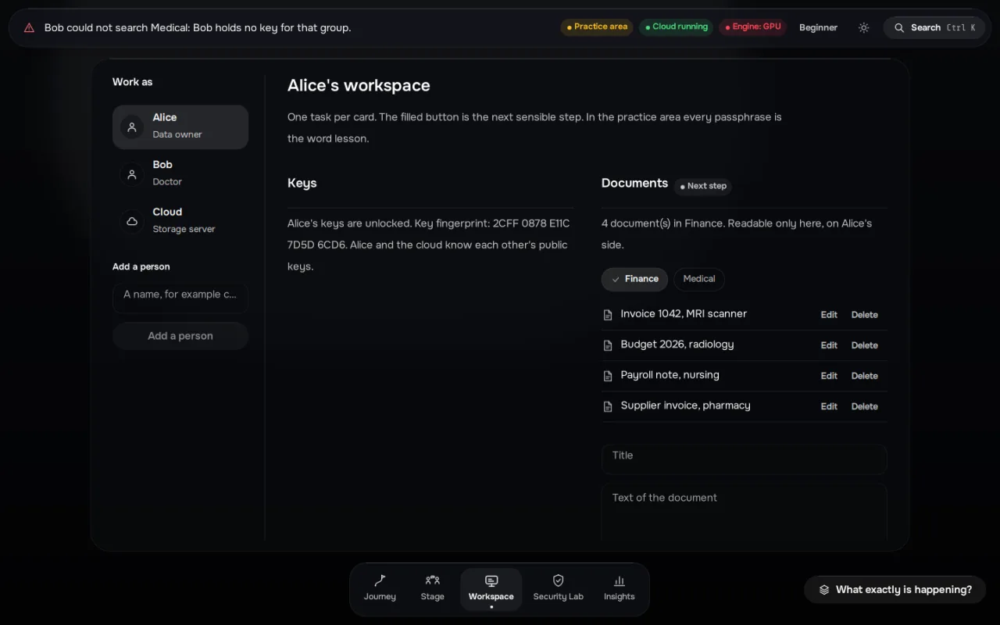

Search encrypted documents through a server you do not trust
PQ-SSE Desktop is a Windows app that encrypts documents, lets the people you approve search them through a storage server that never sees the words, and checks that every answer is complete and unchanged. Its keys and signatures use the post-quantum standards ML-KEM and ML-DSA.
For students and teachers of cryptography, researchers reproducing the PQ-SSE paper, and anyone who wants to watch searchable encryption run. Not for protecting real records: it has not been audited.


What you can do with it
All features- Lock and index documentsAdd or import documents (.txt, .md, .pdf). Each one is encrypted before it leaves the owner's side, and an encrypted index makes it searchable.
- Approve who may search which groupA person sends a signed join request. The owner sees its key fingerprint, ticks the groups they may search, and approves.
- Search without unlockingType one word. The app turns it into secret addresses, and the server returns what is stored there without learning the word.
- Check every answerBefore anything is shown, 8 checks confirm the answer is signed, complete, unchanged and recent. If one fails, nothing is shown.
- Change the locks when someone leavesRevoke a person: the server refuses their pass and each group they had gets a new key. Choose quick (policy R) or thorough (policy RE).
- Attack it and watch it fail10 attacks by a cheating server or an outsider run on a throwaway copy, and each one shows the check that stopped it.
What happens when you search
How it works, step by step- 1You type a wordIt stays on your computer.
- 2The app makes a tokenThe word becomes a list of secret addresses, encrypted so that only the server can read the list.
- 3The server looks them upIt returns what is stored at those addresses, with its signature. It never learns the word.
- 4The app checks the answer8 checks against the owner's signed summary. One failure and nothing is shown.
- 5You open what you mayDocuments decrypt only with the keys of the groups you were approved for.
Inside the app
Every feature, by screen- JourneyA guided lesson of 13 short steps that runs the real system in a separate practice area, plus 7 challenges.
- StageWhat each party holds and what moved between them, with a lens to see the same data as the data owner, a receiver or the server sees it.
- WorkspaceThe working tools, one role at a time: the data owner, a receiver, or the storage server.
- Security Lab10 attacks and a comparison of the two ways to revoke, each run on a throwaway copy.
- InsightsThe GPU engine and its self-test, measurements, settings, the data folder, logs and About.
Proof, not claims
Measured on 2026-11-18 on 13th Gen Intel(R) Core(TM) i7-13620H, NVIDIA GeForce RTX 4060 Laptop GPU, 8 GB, Windows build 10.0.26300, Python 3.11.9, post-quantum code: kyber-py + dilithium-py (pure Python). Timings are from the app's own benchmark with ML-KEM-768 + ML-DSA-65, all three parties in one process (the same encoded messages as over HTTP, without the network).
Read this before you rely on it
Security and privacy in full- Research and teaching software. It has not been audited. Do not use it to protect real records.
- The default post-quantum code is pure Python: slow, and not constant time.
- The server runs on the same PC (127.0.0.1, no TLS). There is no setup across several machines.
- The server still learns sizes, counts, timing and when a search is repeated. It never sees words, text or keys.
- Policy R leaves older documents readable to a revoked person who teams up with the server. Policy RE closes that gap at a higher cost.
- The GPU only speeds up building large indexes. For small ones it is slower than the processor.
- The installers are not code signed, so Windows warns before it runs them.
The guided lesson
About JourneyJourney runs the whole system for real, step by step, in a separate practice area that leaves your own data alone. It uses the three role names below. An option in Journey, Teaching names, shows a small cast instead: Alice for the data owner, Bob and Carol for two receivers.
- Data ownerOwns the documents and holds the keys. Decides who may search which group.
- ReceiversMay search only the groups the data owner approved them for.
- Cloud serverStores the encrypted documents and answers searches. Nobody trusts it.